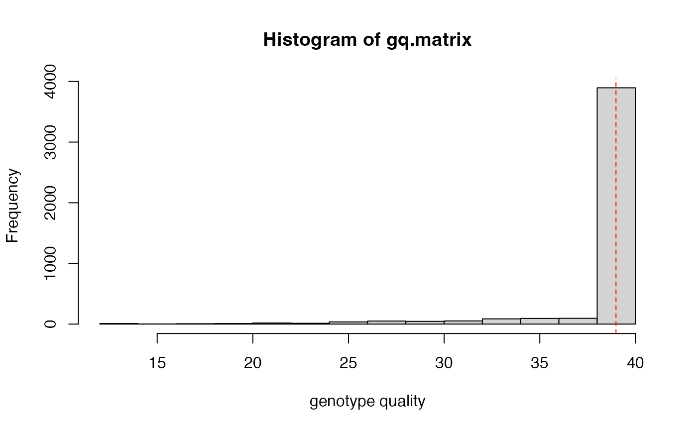

hard_filter.RdThis function requires a vcfR object as input. The user can then specify the minimum value for depth of coverage required to retain a called genotype (must be numeric). Additionally, the user can specify a minimum genotype quality required to retain a called genotype (again, must be numeric).
hard_filter(vcfR, depth = NULL, gq = NULL)a vcfR object
an integer representing the minimum depth for genotype calls that you wish to retain (e.g. 'depth = 5' would remove all genotypes with a sequencing depth of 4 reads or less)
an integer representing the minimum genotype quality for genotype calls that you wish to retain (e.g. 'gq = 30' would remove all genotypes with a quality score of 29 or lower)
The vcfR object input, with the sites failing specified filters converted to 'NA'
hard_filter(vcfR = SNPfiltR::vcfR.example, depth = 5)
#> 28.81% of genotypes fall below a read depth of 5 and were converted to NA
#> no genotype quality cutoff provided, exploratory visualization will be generated.

#> ***** Object of Class vcfR *****
#> 20 samples
#> 1 CHROMs
#> 500 variants
#> Object size: 0.6 Mb
#> 55.91 percent missing data
#> ***** ***** *****
hard_filter(vcfR = SNPfiltR::vcfR.example, depth = 5, gq = 30)
#> 28.81% of genotypes fall below a read depth of 5 and were converted to NA
#> 3.81% of genotypes fall below a genotype quality of 30 and were converted to NA
#> ***** Object of Class vcfR *****
#> 20 samples
#> 1 CHROMs
#> 500 variants
#> Object size: 0.6 Mb
#> 57.59 percent missing data
#> ***** ***** *****